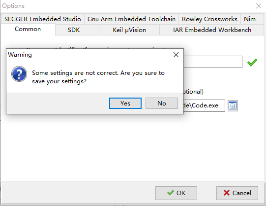
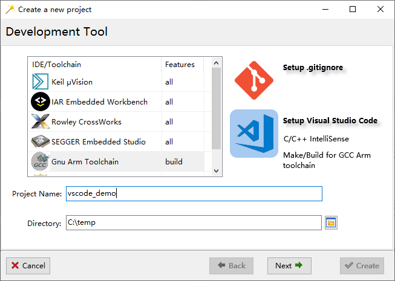
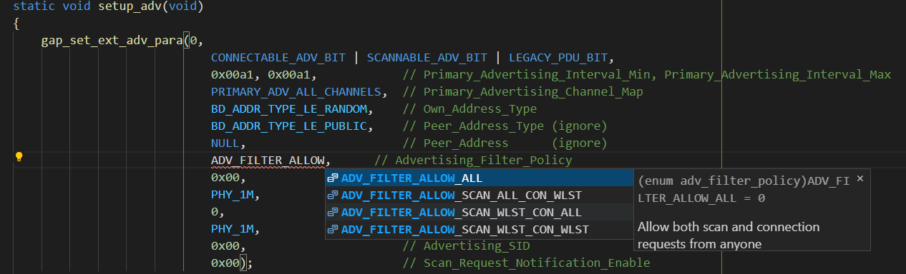
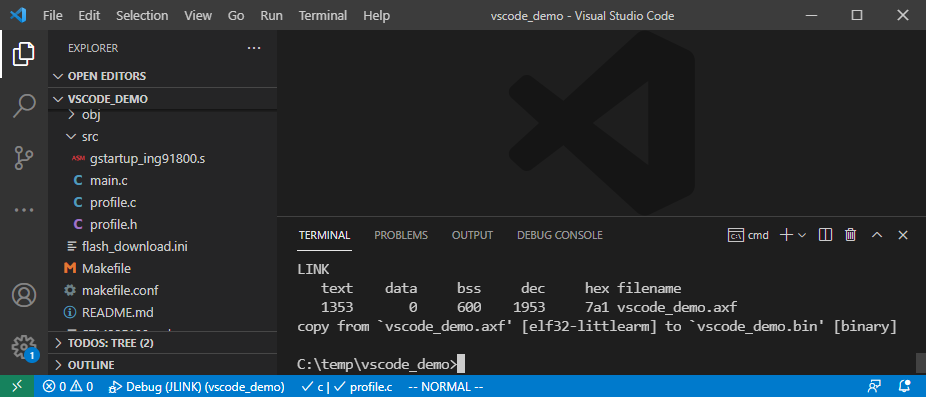
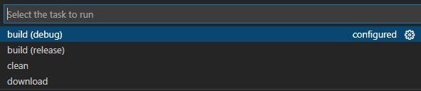
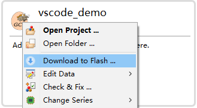
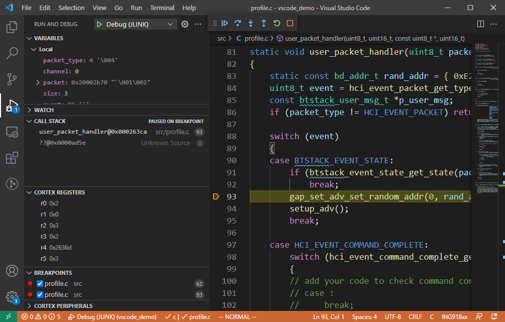

Visual Studio Code 是由微软开发，开放源代码的“现代化”代码编辑器，内置 Git 版本控制功能， 同时也具有开发环境功能，支持代码补全、代码片段和代码重构等。 借助其丰富而强大的插件（扩展），可以打造出一套功能完整的集成开发环境。
安装与配置
整个集成开发环境由 4 个部分组成，各部分的安装步骤如下。
1. Visual Studio Code 本体
直接下载安装。
2. Gnu Arm Toolchain
直接下载安装。
假设安装目录为 path/to/gcc。
3. 调试服务器
有两种调试服务器可供选择：OpenOCD、J-Link。这里我们选用 J-Link， 直接下载安装。
假设安装目录为 path/to/j-link。
4. VSCode 调试插件
为 VSCode 安装 “Cortex-Debug” 插件。打开插件配置 json 文档，在文件末尾增加如下 4 项数据：
{
// ...
"cortex-debug.armToolchainPath": "path/to/gcc/bin",
"cortex-debug.armToolchainPrefix": "arm-none-eabi",
"cortex-debug.registerUseNaturalFormat": false,
"cortex-debug.JLinkGDBServerPath": "path/to/j-link/JLinkGDBServerCL.exe"
}
这里除了配置工具路径之外，把寄存器也修改为更常见的十六进制方式显示。
5. 配置 ingWizard
打开 ingWizard Options 窗口：
- 在 Common 页面填入 VSCode 可执行文件的完整路径；
- 在 Gnu Arm Embedded Toochain 页面，填入
arm-none-eabi-gcc.exe的完整路径。
点击“OK”按钮（如果弹出对话框要求检查信息是否完整，点击“Yes”确认）保存设置。

使用
使用 ingWizard 新建一个使用 Gnu Arm Toolchain 的项目。注意选中“Setup Visual Studio Code”。

1. 开发
开发过程中代码补全、信息提示等功能正常：

2. 编译
在终端窗口输入 make release 以优化模式编译项目：

也可以通过 build (release) Task 编译项目：

3. 下载
在 ingWizard 通过快捷菜单或者在 VSCode 运行 download Task 打开 Flash 下载器。

4. 调试
用 make clean debug 命令以调试模式再次编译，然后重新下载。
在 VSCode 里按下 F5 进入在线调试模式。回到 VSCode 的代码编辑窗口，可以添加断点、查看变量等。从下图可以看出，变量查看、寄存器查看、函数调用栈、断点等功能齐备。

为已有项目追加调试功能
在项目目录的 .vscode 子文件夹内新建 launch.json 文件，内容如下：
{
"version": "0.2.0",
"configurations": [
{
"type": "cortex-debug",
"request": "launch",
"name": "Debug (JLINK)",
"servertype": "jlink",
"cwd": "${workspaceRoot}",
"interface": "swd",
"runToMain": false,
"executable": "AXF文件名.axf",
"device": "Cortex-M3",
"configFiles": [ ],
"svdFile": "${env:ING_SDK_ROOT}/flash/KeilFlash/pack/SVD/ING91800.svd",
"swoConfig": {
"enabled": true,
"cpuFrequency": 48000000,
"swoFrequency": 4000000,
"source": "probe",
"decoders": [
{ "type": "console", "label": "ITM", "port": 0 }
]
}
}
]
}